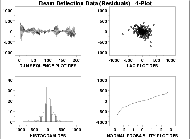

|
1.
Exploratory Data Analysis
1.4. EDA Case Studies 1.4.2. Case Studies 1.4.2.5. Beam Deflections
|
|||
| 4-Plot of Residuals |
The first step in
evaluating the fit
is to generate a 4-plot
of the residuals.
|
||
| Interpretation |
The assumptions are addressed by the graphics shown above:
|
||
| Fit Results with Outliers Removed |
The following parameter estimates were obtained after removing three
outliers.
Coefficient Estimate Stan. Error t-Value
C -178.788 10.57 -16.91
AMP -361.759 25.45 -14.22
FREQ 0.302597 0.1457E-03 2077.00
PHASE 1.46533 0.4715E-01 31.08
Residual Standard Deviation = 148.3398
Residual Degrees of Freedom = 193
|
||
| New Fit to Edited Data |
The original fit, with a residual standard deviation of
155.84, was:
|
||
| 4-Plot for New Fit |

This plot shows that the underlying assumptions are satisfied and therefore the new fit is a good descriptor of the data. In this case, it is a judgment call whether to use the fit with or without the outliers removed. |
||